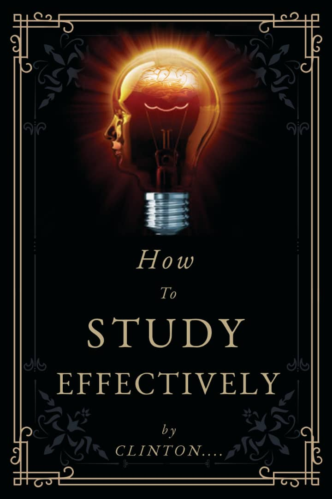

What I do
My Call value is to make impact in Ghana, Africa and beyong therefore I chance of every little opportunity making the best out of them. I believe in transformational leadership, hence every sphere of influence is important to me.
Book Author
I write categorically on self help.There is much to learn about our potentials. My quest is to delve within the deep: learn from the great and many experinces of others success and failures and wisdom from many books read.
Poet
Words are best to express emotions as a poet my anthropology of poems expresses most of the emotions life can ever bring.
motivational Speaker
I maximize the potential of young ones in both senior high and tertiary level by trying to inspisre and encourage them to become more attentive to thier own abilities and talent.
Projects
A project on curbing teenage pregnacy(Aburi)
In commemoration of the annual World Contraceptives Day, and with the aim of empowering young people with the right information regarding their Sexual and Reproductive Health, the Marie Stopes Ghana Youth Advisory Board in collaboration with some selected tertiary schools in Accra (of which Ghana Technology University College was part of) the maiden edition of the NO YAWA Pageantry was organized. .
Client: The Youth

Book on productive learning
An extensive research into the methodology of studying, laying out enphacies on how best a student can find his or her core competenses at studying strategically marching them into a perfect learning style.
Client: Students